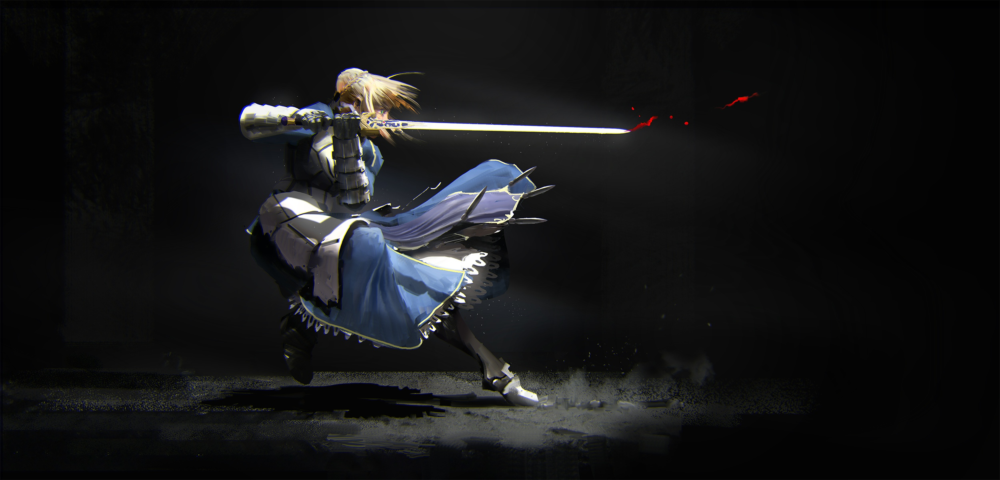

About Artoria
Artoria is the true identity of king Arthur in the arthurian legend. She is summoned to the holy grail war as a saber class servant, to hide her indentity she is refered to as just Saber
Saber in action
Saber's Characteristics
- Blonde hair
- Magic armor
- Invisible sword
Saber's Friends
Saber has no friends. But she does have the Knights of the round table whom she trusts. Click on the links below to read more about them: